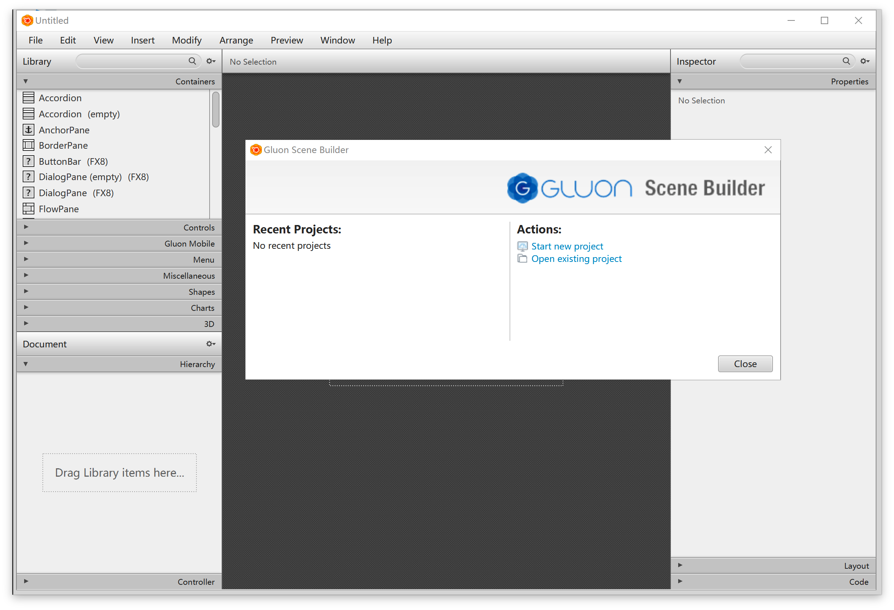
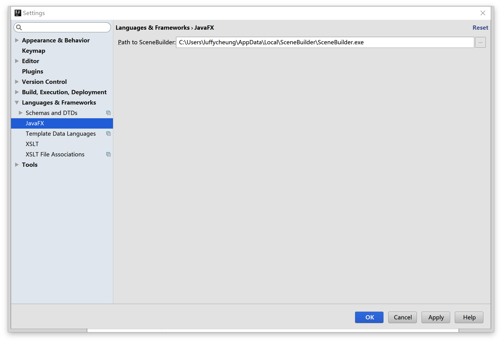
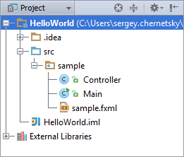
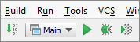

实验一. IntelliJ IDEA for JavaFX环境搭建
实验目的
- 掌握在Windows下，IntelliJ IDEA集成开发环境的搭建;
- 熟悉集成开发环境;
实验环境
- 硬件：CBT-IOT-CTP 实验平台,PC机;
- 软件： IntelliJ IDEA ,JDK,Scene Builder;
实验内容
- JDK安装;
- Scene Builder界面设计软件安装；
- IntelliJ IEDA开发环境安装及配置;
- JavaFX项目工程介绍；
帮助链接
你可能会想收藏下面的链接：
Java 8 API - Java 标准类的文档。
JavaFX 8 API - JavaFX 类的文档。
IDEA JavaFX - 在IntelliJ IDEA环境下开发JavaFX的文档。
Oracle's JavaFX Tutorials - Oracle 的 JavaFX 官方教程。
一切就绪，让我们开始吧！
实验步骤
本地安装包路径：光盘\tools\Windows环境搭建\。
├── jdk-8u121-windows-x64.exe
├── ideaIC-2016.3.4.exe
└── SceneBuilder-8.3.0.exe
Java开发环境安装
- 启动
jdk-*.exe，根据安装向导指示安装。 - 配置环境变量。选择“Start”菜单 > 电脑 > 属性 > 高级系统选项。然后打开“高级”选项卡 > 环境变量进行配置。
- 在“系统变量”新建一个变量名为
JAVA_HOME的变量，变量值为你本地java的安装目录，这里为：C:\Program Files\Java\jdk1.8.0_31，设置这个的目的是作为下面两个环境变量的一个引用 - 在“系统变量”选项区域中查看PATH变量，如果不存在，则新建变量PATH，否则选中该变量，单击“编辑”按钮，在“变量值”文本框的起始位置添加
“%JAVA_HOME%\bin;%JAVA_HOME%\jre\bin;” - 在“系统变量”选项区域中查看
CLASSPATH变量，如果不存在，则新建变量CLASSPATH，否则选中该变量，单击“编辑”按钮，在“变量值”文本框的起始位置添加“.;%JAVA_HOME%\lib\dt.jar;%JAVA_HOME%\lib\tools.jar;”。
判断是否安装成功：
在cmd命令行中输入命令：
- 在“系统变量”新建一个变量名为
java -version
出现如下打印信息说明配置成功：
java version "1.8.0_121"
Java(TM) SE Runtime Environment (build 1.8.0_121-b13)
Java HotSpot(TM) 64-Bit Server VM (build 25.121-b13, mixed mode)
Scene Builder安装
- 运行
SceneBuilder*.exe文件，默认安装即可。按照完成后勾选取消注册账号按钮进入主界面。

IntelliJ IEDA开发环境安装
运行
idea*.exe文件，按照安装向导默认安装即可。在Window中运行IntelliJ IDEA
如果你在安装过程中选择在桌面创建快捷方式，直接双击快捷方式即可。
否则，你需要打开C:\Program Files (x86)\JetBrains\IntelliJ IDEA Community Edition 2016.3.4\bin)然后运行idea.exe或者是idea.bat。
首次运行会出现设置向导，选择Skip All and Set Defaults默认设置。
配置IDEA环境
- 确保JavaFX插件已经启用。（改插件集成在IDE按照包内默认是启用状态）
查看方法：
在上步的欢迎界面右下角中点击Configure,选择打开 Plugins 确保 JavaFX右侧是☑️状态。

创建个JavaFX项目
在上步的欢迎界面中选择Create New Project,左侧列表选择Java JavaFX,点击Next,项目名默认，点Finish完成创建。
- 点击菜单栏
View，将ToolBar和Tool Buttons勾选上。界面入下图：

给IntelliJ IDEA设置JDK。
（默认JDK已安装，在IDEA安装过程中会自动检测JDK并配置）
设置方法：
- 在主菜单选择File | Project Structure；
- 左侧面板选择Platform Settings | SDKs；
- 右侧面板点击
➕号，打开的对话框中选择本地JDK安装路径，点击OK。
给IntelliJ IDEA配置Scene Builder
打开
Settings,左侧面板选择Languages and Frameworkds | JavaFX；右侧点击浏览按钮，定位到本地
SceneBuilder安装目录，选择SceneBuilder.exe;点击下方的
Apply和OK按钮应用。

认识JavaFX项目

src文件夹存放源代码。在这个文件夹中已经有个sample名称的包名，有以下三个文件：
Main.java是主应用程序类，用于启动本示例程序。sample.fxml是FXML文件用于定义用户界面。Controller.java. 这是控制类用于处理上层界面的节目交互。
在IDE界面工具栏中间有个 run/debug工具框，工具框列表选项中显示和主应用类相同的名称（Main）。

运行示例程序
为确保程序没有错误, 点击工具栏里的 图标。等待
图标。等待
IntelliJ IDEA编译完成后程序会自动运行，界面会显示一个空白的窗体。
点击右上角的关闭按钮关闭应用程序。